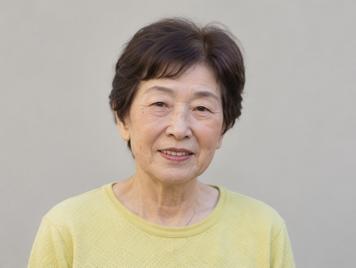
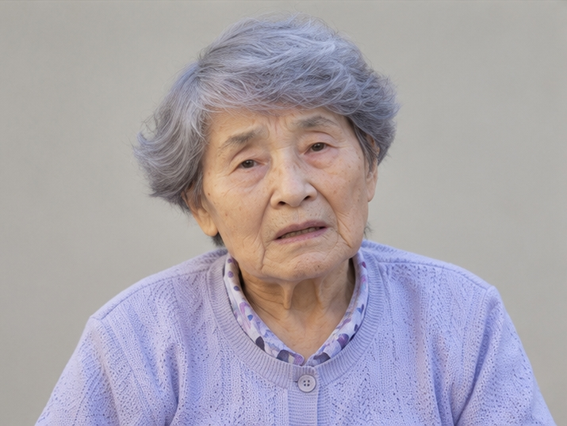
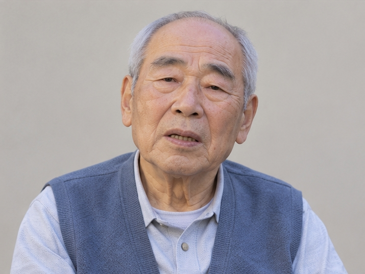
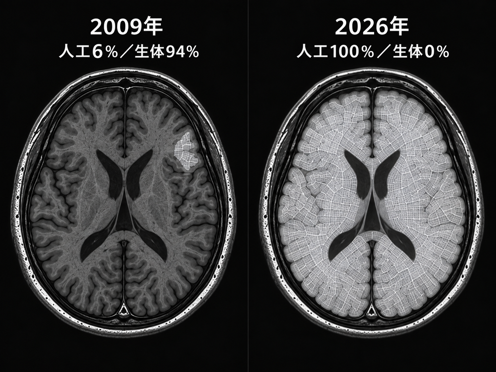

被験者A
- 置換率
- 34％
- 症状
- 記憶混乱
内部記録
生活支援制度の利用者情報をもとに、長期観察および処置対象としての条件評価を実施する。
健康状態に加え、外部との接触頻度および長期観察の継続可能性を選定基準に含む。




安全な置換順序、置換可能な範囲、副作用を確認するため、別の人体を用いた実験が行われた。
必要な症例数を確保する目的で、花澄の杜では生活支援制度が拡充された。
保証人のいない者、家族との交流がない者、生活困窮状態にある者などが優先的に受け入れられた。
各被験者から得られた結果は、白石芳江への次回処置へ反映された。
彼らは、白石芳江を安全に100％まで到達させるための試験対象だった。
研究目的達成